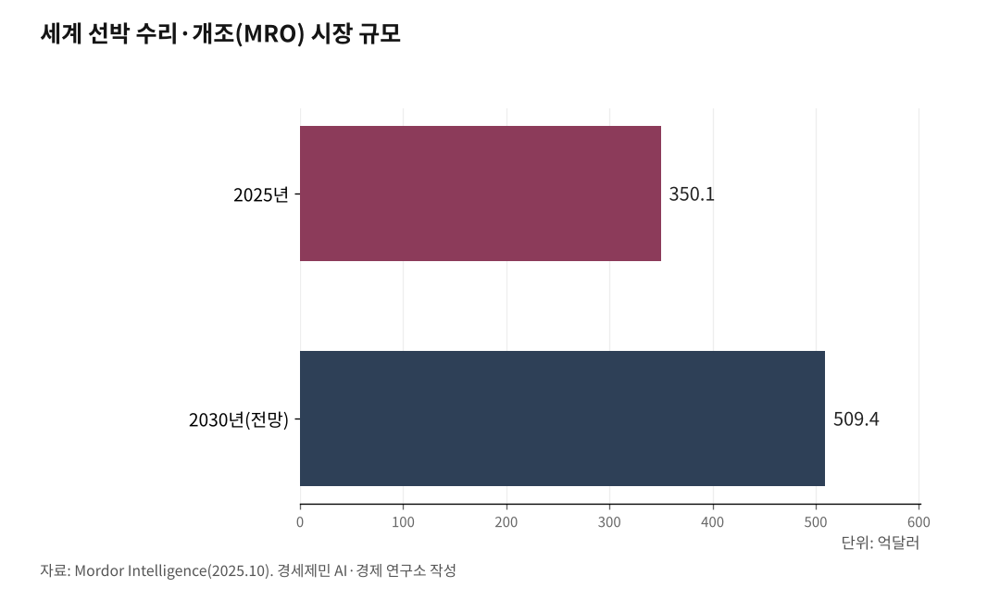

[인천해양산업, 생존기로⑳] 70조원 선박 수리·개조 시장 열렸다, 인천은 거점 0개
부산 영도, 수리조선 클러스터·KOMERI·미 해군 함정까지 다 잡았다
전남 목포 해경 정비창 2026년 2월 개창, 4개 시·도 공동 공모에 인천 빠졌다
해경 정비창은 부산 다대포 단독, 인천 서특단 함정도 부산 가서 정비받는다
세계 선박 수리·개조(Boat and Ship MRO) 시장이 2025년 350억1000만달러(약 47조원)에서 2030년 509억4000만달러(약 70조원)로 커진다(Mordor Intelligence, 2025.10). 연평균 7.79% 성장이고 아시아·태평양이 39.44%를 차지한다. 부산·경남·전남은 줄을 섰는데 인천에는 거점도 인력도 정책 패키지도 없다. 국제해사기구(IMO) '넷제로 프레임워크' 채택이 2025년 10월 1년 연기된 지금이 인천에 주어진 마지막 출발선이다.

1. IMO는 1년 연기됐고 시장은 그대로 움직인다
IMO는 2025년 4월 제83차 해양환경보호위원회(MEPC 83)에서 '넷제로 프레임워크(Net-Zero Framework, NZF)'에 합의했다. 5000총톤(GT, Gross Tonnage) 이상 모든 외항선박에 온실가스 연료 집약도(GFI, GHG Fuel Intensity) 기준을 적용하고, 기준 미달 선박에는 부과금을 매기는 체계다. 2008년 배출량 대비 2030년 20~30%, 2040년 70~80% 감축을 거쳐 2050년 넷제로가 목표다(KR한국선급, 2025.6).
2025년 10월 17일 영국 런던 MEPC 임시회의에서 채택 표결이 진행됐다. 사우디아라비아가 제출한 1년 연기안이 찬성 57표, 반대 49표로 통과했다. 미국 트럼프 행정부가 '글로벌 탄소세'라며 찬성국에 미국 입항 제한·비자 제재·통상 조사를 경고한 결과다(부산일보, 2025.10.18). 2027년 3월 발효 일정은 무산됐다. 2026년 10월 MEPC 84에서 재논의가 예정됐다(해사신문, 2026.4.25).
IMO 합의는 늦춰졌지만 시장은 그대로 움직인다. EU가 자체 배출권거래제(EU-ETS)를 가동 중이고, 중국·EU·브라질은 IMO 합의가 늦어지면 지역 규제로 가겠다는 입장이다. 한국조선해양기자재연구원(KOMERI)이 2025년 10월 부산 영도 본원에서 친환경 선박·조선 MRO 기술교류회를 열었다(KOMERI 보도자료, 2025.10.1). 행사 참석 기관 명단에 인천은 등장하지 않았다.

2. 시장은 노후선 처리와 친환경 개조 두 갈래다
선박 수리·개조 시장은 두 갈래로 움직인다. 노후선 처리(스크랩·매각·대체 건조)와 친환경 개조(엔진 교체·연료 전환·에너지 효율 향상)다.
노후선 처리는 한국 정부가 '2030 그린십-K 추진전략'으로 묶었다. 2030년까지 공공·민간 528척을 친환경 선박으로 바꾼다. 관공선 388척(노후 199척 대체 건조, 선령 10년 미만 189척 미세먼지 저감장치 개조)과 민간선박 140척(내항 58척, 외항 82척)이다(해양수산부·산업통상자원부, 2020.12.23).
친환경 개조 시장은 더 빠르다. 2023년 한 해에 전 세계 5000척 넘는 선박에 스크러버(scrubber, 황산화물 저감장치)가 설치됐고, 4000척에 평형수처리장치가 장착됐다. 2000척이 친환경 선체 도장으로 바뀌었다(MarketReportsWorld, 2025).
전기 추진과 메탄올·암모니아 전환은 다음 단계다. 중국이 2025년 4월 세계 최초로 1만톤급 순수 전기 컨테이너선 '닝위안뎬쿤(寧遠電鯤)'을 닝보-자싱 항로에 투입했다. 길이 127.8m, 742TEU(20피트 표준 컨테이너 1개 기준 단위), 배터리 1만9000kWh다. 자매선 '닝위안뎬펑(寧遠電鵬)'은 2025년 6월 인도 예정이다. 운영사 닝보원양해운(NBOSCO)은 선대 47척 가운데 29척(54.7%)을 이미 녹색·고효율 선박으로 바꿨다(인천투데이, 2026.4.17).
평택항은 자동차 수출입 163만5000대(2023년)로 국내 1위다. 평택-유럽 그린 메탄올 항로 구축 구상이 2023년 12월 국회 세미나에서 발표됐다(기후솔루션, 2024). 평택에 메탄올 벙커링 인프라도 친환경 선박 정비 거점도 들어서지 않았다.
3. 부산·경남·전남은 클러스터를 짰다, 4개 시·도가 공동 공모까지 갔다
부산은 영도가 핵심이다. HJ중공업 영도조선소가 2025년 7월 22일 인터내셔널마린·오리엔트조선 등 부산·경남 조선기자재 10개사와 '함정 MRO(Maintenance, Repair, Overhaul, 유지·보수·정비) 클러스터 협의체' 업무협약을 맺었다(이투데이, 2025.7.22). 같은 해 12월 미 해군 4만톤급 군수지원함 'USNS 어밀리아 에어하트'함 MRO를 수주했다. 미 해군 해상수송사령부 짐 굿하트 부국장이 2026년 2월 영도조선소를 직접 찾았다(부산일보, 2025.11.19).
영도 동삼동에 KOMERI 본원도 있다. 친환경 추진시스템과 IMO 환경규제 대응을 한 곳에서 맡는다. 부산은 2025년 말 동삼혁신지구에 총사업비 322억원을 투입한 해양과학기술 산학연 협력센터도 준공했다.
경남은 KOMERI와 경남투자경제진흥원이 2025년 10월 친환경 추진기술 R&D, 중소기업 맞춤 지원, 투자·금융 연계 업무협약을 맺었다. 경상남도와 양산시가 함께 들어왔다(KOMERI 보도자료, 2025.10.1).
전남은 더 빠르다. 2026년 2월 말 목포에 해경 정비창이 개창했다. 전남도는 2025~2028년 220억원으로 대불산단에 'AI 전환(AX) 실증산단'을 조성한다. 친환경 에너지 운송 선박용 극저온 단열시스템과 액화이산화탄소(LCO2) 독립형 탱크 자율제조·검사시스템도 정부 공모로 잡았다(전남도 보도자료, 2026.2).
경남·부산·울산·전남 4개 시·도는 2026년 함정 MRO 글로벌 경쟁력 강화 지원 공모사업을 공동으로 신청했다. 인천·평택은 빠졌다.
4. 인천에는 거점이 없다, 해경 함정도 부산 가서 정비받는다
인천 해양 수리·개조 분야를 점검하면 사실관계만 남는다.
거점이 없다. 인천에 한국해양수산개발원(KMI) 분원도, KOMERI 분원도, 함정 정비창도 없다. 인천 송도에서 항공우주산학융합원이 2017년 8명으로 출발해 2025년 58명·누적 사업비 1637억원으로 자랐지만, 같은 송도에 해양산학융합센터는 아직 없다. 인천시가 2025년 (가칭)인천해양항만수산진흥원 설립 타당성 연구용역을 발주한 단계다(인하대학교 경기인천씨그랜트센터, 2026).
해경 함정도 부산까지 가서 정비받는다. 해양경찰정비창은 부산광역시 사하구 다대포에 단독으로 설치돼 있다. 1994년 5월 부산 다대포항으로 신축 이전한 뒤 30여 년째 부산에 머물고 있다(해양경찰정비창 공식 홈페이지). 인천해양경찰서와 서해5도특별경비단 소속 경비함이 정기수리를 받으려면 부산까지 내려가야 한다. 2026년 3월 26일 인천 중구 해양경찰 전용부두에서 취역한 3000톤급 신형 경비함정 '3019함(태평양19호)'도 마찬가지다(경인일보, 2026.3.26).
인프라도 미달이다. 인천항 국제여객부두 3개 선석에 설치된 육상전원공급설비(AMP, Alternative Maritime Power) 5대 가운데 가동 중인 것은 2대다. 부두를 이용하는 선박 8척 가운데 수전설비(AMP에서 전력을 받는 장치)를 갖춘 선박은 2척뿐이다. 2번 선석 AMP 2대는 설치 4년간 한 번도 사용되지 않았다. 수전설비 설치 비용이 10억원에 이르고 화물 적재 공간이 줄어든다는 이유로 선사들이 기피한다(경인일보, 2024.6.23).
평택도 다르지 않다. 평택항은 자동차 수출입 1위지만 메탄올 벙커링 인프라가 없다. 평택-유럽 녹색해운항로 구상은 2023년 12월 국회 세미나 발표 이후 후속 사업화가 미진하다.
정책 패키지도 없다. 부산은 부산광역시 해양과학기술 육성 및 지원에 관한 조례 제8조에 센터 설치·운영 근거를 두고 국비 209억원을 끌어왔다. 인천시 해양산업 육성 조례에는 친환경 선박·수리조선 거점 설치를 직접 규정한 조항이 없다. 18편에서 정리했듯 조례에 설치 조항이 없으면 해수부가 기획재정부에 예산을 제출할 때 매칭 의지를 확인하는 단계에서 인천은 서류가 빈다(인천투데이, 2026).
5. 1년의 시간이 남았다, 인천이 잡을 갈래는 셋이다
IMO 넷제로 프레임워크 채택이 2026년 10월로 미뤄지면서 인천에 1년의 시간이 더 주어졌다. 19편에서 본 해양수산부 균형 네트워크 용역과 묶이는 자리이기도 하다. 거버넌스 재편 논의가 활발한 1년이다.
이 시간에 인천이 잡을 갈래는 셋이다.
첫째 갈래는 한·중 카페리·피더선 친환경 전환이다. 인천항은 한·중 카페리 10개 노선을 운영한다. 2024년 컨테이너 물동량 355만8455TEU 가운데 약 64%가 중국과 오갔다. 11편에서 정리했듯 인천은 환황해 10조6000억달러 경제권의 한국 측 관문이다. 중국이 닝위안뎬쿤·닝위안뎬펑 자매선을 정기 노선에 투입하면서 인천-중국 항로는 친환경 전환 압력에 직면하고 있다. 2023년 2월 국토교통부와 중국 교통운수부가 체결한 중한 복합운송 시범사업(웨이하이-인천) 양해각서에 친환경 선박 협력 항목이 추가될 자리다.
둘째 갈래는 평택과 묶는 것이다. 평택은 메탄올 자동차운반선(PCTC, Pure Car and Truck Carrier) 정비 수요가 가장 빠르게 생기는 항만이다. 인천은 컨테이너 355만TEU(2024년)로 컨테이너선 정비 수요를 받친다. 12편에서 정리한 '부산은 원양, 인천은 대륙' 분업 구조 위에 인천-평택 친환경 수리·개조 공동 클러스터를 얹는 카드다. P1 용역 보고서(인하대학교 경기인천씨그랜트센터, 2026)는 부산항이 환태평양·유럽 해운의 관문이라면 인천항은 RCEP과 중앙아시아의 관문이라는 분업 구조를 명시했다.
셋째 갈래는 함정 정비 자립이다. 인천해양경찰서와 서해5도특별경비단 함정이 부산까지 가서 정기수리를 받는 구조는 작전 공백을 부른다. 인천에 해경 정비창 분원 또는 위탁 정비 거점을 두는 안은 19편 해양수산부 균형 네트워크 용역 결과 보고서가 다룰 만한 의제다. 부산이 함정 MRO 클러스터(상선과 함정을 묶은 영도 클러스터)를 키우듯, 인천도 한·중 카페리·피더선 수리(상선)와 해경 함정 정비(함정)를 묶을 자리가 있다.
부산이 4조9000억원으로 움직이고 전남이 220억원으로 시작한다. P1 용역 보고서가 정리한 5대 전략 가운데 전략 가(균형발전)와 전략 다(에너지·AI)는 친환경 선박 수리·개조 거점이 빠지면 그림이 비어진다(인하대학교 경기인천씨그랜트센터, 2026). 70조원 시장에서 인천 몫은 1년 안에 조례 정비와 거점 부지 확보로 출발선을 긋는지에 달렸다. IMO 1년 연기는 시장의 후퇴가 아니라 인천에 주어진 마지막 출발선이다.
[연구윤리 공시] 본 기사는 인천 해양수산 산·학·연 거점 조성 타당성 및 기본계획 수립(2026.3) 용역에 참여한 연구자가 작성했다. 동 용역의 분석을 본 기사 일부에 인용했다. 동 용역 발주처는 인천광역시이며, 본 기사 작성에 발주처의 관여는 없었다.
참고문헌
·"2030년까지 선박 528척 친환경 전환…온실가스 배출 40만톤 감축", 대한민국 정책브리핑, 2020.12.23. https://www.korea.kr/news/policyNewsView.do?newsId=148881605
·"KOMERI, 친환경 선박·조선 MRO 디지털 혁신 이끈다", 한국조선해양기자재연구원 보도자료, 2025.10.1. https://www.komeri.re.kr/bbs/board.php?bo_table=press&wr_id=245
·"전남도, 조선산업 'AI 전환·친환경·MRO'로 미래 경쟁력 정조준", 전남도 보도자료, 2026.2.18. https://www.mtnews.net/news/articleView.html?idxno=23952
·"해양경찰정비창 소개 및 연혁", 해양경찰정비창 공식 홈페이지. https://www.kcg.go.kr/mckcg/cm/cntnts/cntntsView.do?mi=2564&cntntsId=262
·"IMO 넷제로 프레임워크: 해운업계의 새로운 패러다임", KR한국선급 탈탄소화 인사이트, 2025.6. https://kr-decarbonization.co.kr/2025/june/kor/insights.html
·"보트 및 선박 MRO 시장 분석", Mordor Intelligence, 2025.10. https://www.mordorintelligence.kr/industry-reports/boat-and-ship-mro-market
·"탄소중립을 위한 대한민국-유럽 녹색해운항로", 기후솔루션, 2024. https://forourclimate.org/ko/research/583
·인하대학교 경기인천씨그랜트센터(2026), 『인천 해양수산 산·학·연 거점 조성 타당성 및 기본계획 수립』, 인천광역시 발주.
·산업집적활성화 및 공장설립에 관한 법률 제22조의4, 제22조의5, 국가법령정보센터. https://www.law.go.kr
·부산광역시 해양과학기술 육성 및 지원에 관한 조례 제8조, 국가법령정보센터. https://www.law.go.kr
·"트럼프 벽에 막힌 '국제해운 첫 탄소세' 도입…IMO,'선박 온실가스 감축조치' 연기", 부산일보, 2025.10.18. https://www.busan.com/view/busan/view.php?code=2025101802091769991
·"미 함정 MRO 사업, 대규모 '상선 건조'로 판 커지나", 부산일보, 2025.11.19. https://www.busan.com/view/busan/view.php?code=2025111918133789045
·"IMO MEPC 84, 넷제로 프레임워크 '운명 주간' 돌입", 해사신문, 2026.4.25. https://www.oceanpress.co.kr/news/article.html?no=29883
·"HJ중공업, 부산·경남 기업들과 'MRO 클러스터 협의체' 조성", 이투데이, 2025.7.22. https://www.etoday.co.kr/news/view/2490191
·"운영 4년된 '인천항 AMP(선박 육상전원공급설비)' 선사들 외면", 경인일보, 2024.6.23. https://www.kyeongin.com/article/1696965
·"해경, '서해5도 중국어선 단속' 3천t급 신형 경비함정 투입", 경인일보, 2026.3.26. https://www.kyeongin.com/article/1760882
·"세계 최초 1만톤 전기 컨테이너선 中 상업 운항… 인천항 피더는", 인천투데이, 2026.4.17.
※ 이 기사는 AI 프로그램 클로드를 활용해 작성했습니다.
#인천해양산업 #선박수리개조 #IMO넷제로 #친환경선박 #그린십K #항공우주산학융합원 #부산영도클러스터 #해양경찰정비창 #한중카페리 #생존기로